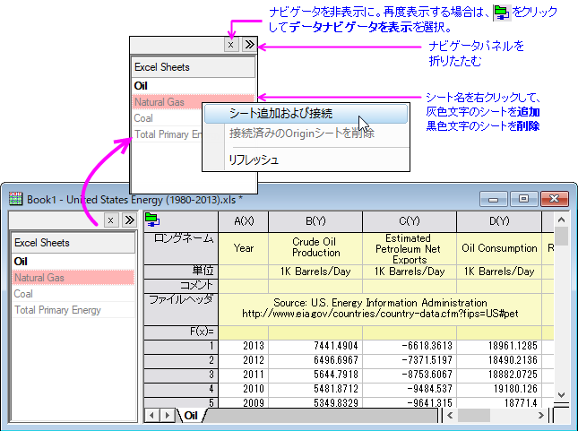
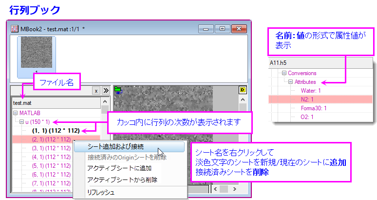
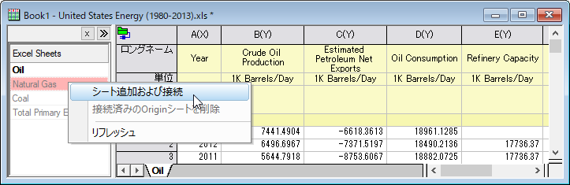
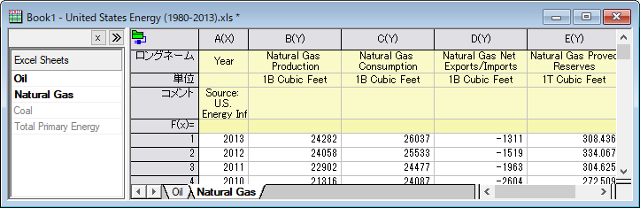

データナビゲータ
Data_Navigator
データナビゲータは、Excel、MATLAB、Originプロジェクトなどの複数ページのファイルに接続したときに、ブックに自動的に追加される折りたたみ可能なパネルです。
- 
- 
複数ページのファイルに接続
- ワークブックまたは行列ブックがアクティブな状態で、データ: ファイルに接続/Webに接続から、複数ページファイルを参照します。
- ダイアログが開いたら、インポートするデータ構造を選択（シート、配列など）し、OKをクリックしてブラウザを閉じて選択したシートまたは配列をインポートします。
- データナビゲータパネルを開きます（開いていない場合）。
- 接続されていないシート、配列などをワークブックまたは行列ブックにインポートするには、データナビゲータパネルで淡色表示されたオブジェクトを右クリック（Shift+クリックで複数のオブジェクトを選択できます）し、使うメニューを選択します。
| 新しいシートとして接続
|
デフォルトの設定で新しいシートとして選択したオブジェクトをインポートします。
|
| アクティブシートを複製して接続
|
現在のシートの設定（メタデータの扱い、部分インポート、インポート後のLabTalkスクリプトを含む）を使って新しいシートとして選択したオブジェクトをインポートします。Note：列の削除のようなインポート後の操作も現在のワークシートの設定として記憶されています。
|
| アクティブシートに追加
|
デフォルトのインポート設定で現在のシートの新しい列として選択したテーブルを追加します。
|
例：複数のExcelファイルに接続
- 新規のワークブックから、データ:ファイルに接続:Excelを選択します。
- <Originインストールフォルダ>/Samples/Import and Export/United States Energy (1980-2013).xlsを検索し、開くをクリックします。
- ExcelシートをOil、メインヘッダ行＝自動のままとします。列ラベルもチェックされ、ロングネーム = 1、単位 = 2 が自動検出されます。OKをクリックして、データをインポートします。
- 他のシート（例：Natural Gas）に接続するには、ナビゲータパネルにある目的のシートを右クリックし、シート追加および接続を選択します。

これでNatural Gasタブが新しくワークブックに追加され、Excelシートのデータに接続されます。

| Note:コネクタを使用して読み込まれたデータは編集からロックされており、インポートファイルのサイズが500kB以上の場合、デフォルトではプロジェクトファイルとともに保存されません。次を参照ください。
|